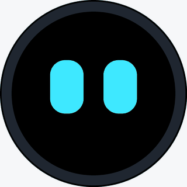
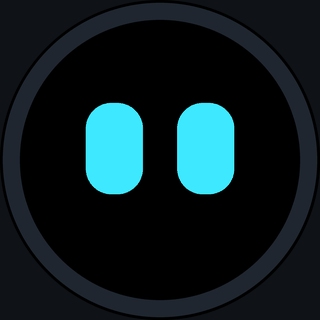

Blinky Setup
Flash the firmware and set up a new Blinky, right from the browser. Works in Chrome or Edge on Windows, macOS and Linux. Nothing is installed, and your settings go straight to the device.
1 Install the firmware
Plug Blinky into this computer with a USB cable. Skip this step if the firmware is already installed.
Checking for firmware…
2 Connect
Close buddyd or any serial monitor first: only one program can use the USB port.
This browser can't use USB devices (Web Serial). Please use Chrome or Edge on a computer.
3 Settings
Connect the device to load its settings.